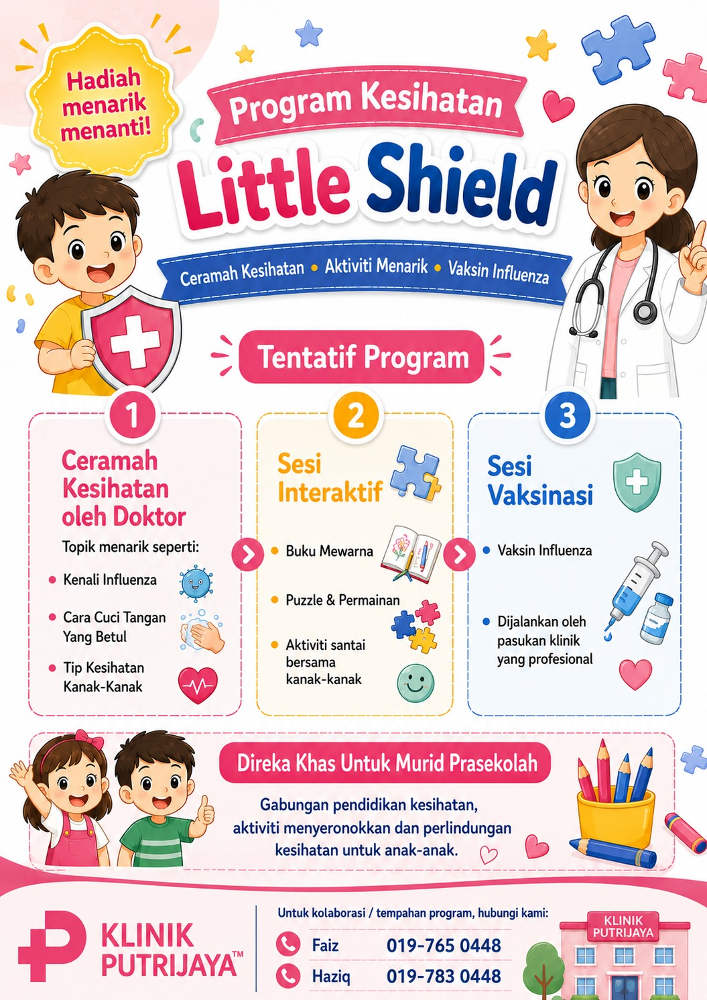

Influenza Awareness
Simple parent and teacher education on symptoms, spread, prevention and annual vaccination awareness.

Influenza protection, hygiene education and child health awareness for taska and tadika communities in Cheras, Sungai Besi and Puchong.
Little Shield is a community-based initiative for preschool communities. The programme combines parent-friendly influenza awareness, practical hygiene education, taska or tadika communication and optional on-site influenza vaccination.
Vaccination is only offered with parent or guardian consent and after medical eligibility screening. Health awareness activities remain useful for every participating child, regardless of whether the family chooses vaccination.
The initial coverage focuses on taska and tadika around Klinik Putrijaya Cheras, Sungai Besi and Puchong.

Simple parent and teacher education on symptoms, spread, prevention and annual vaccination awareness.
Handwashing habits, cough etiquette, classroom hygiene reminders and child-friendly learning materials.
On-site influenza vaccination only for children with completed parent consent and medical screening.
Colouring, puzzles, games and practical learning activities suitable for young children.
Sponsor-supported hygiene or child-care items positioned as programme appreciation, not a reward for vaccination.
Structured reporting on schools reached, parent interest, participants, packs distributed and campaign exposure.
Klinik Putrijaya confirms an interested taska or tadika and obtains permission to share programme information.
The school shares the poster, parent message and QR interest form with parents or guardians.
Interested parents receive programme information, consent guidance and initial medical eligibility questions.
Confirmed parents complete the consent process and receive programme-day instructions.
The Klinik Putrijaya team conducts health education, activities and optional vaccination with safe medical workflow.
Parents receive aftercare information while schools and partners receive an agreed programme summary and impact report.
Partners may support product packs, education materials, printing, vouchers, selected-school sponsorship or campaign activation.
Health education support, selected-school subsidy, vouchers and appropriate campaign materials.
Wet wipes, handwash, sanitiser, tissues, child-care samples and practical hygiene materials.
Programme funding, printing, media support and sponsored participation for selected schools or families.
Taska and tadika contacted, interested and confirmed.
Parents reached, QR scans, forms submitted and completed calls.
Consented children, education participants and completed vaccinations.
Health packs distributed and schools exposed to supporting partners.
Campaign posts, views, engagement and partner mentions.
Feedback from school operators, teachers and parents.
Register your school’s interest or contact Klinik Putrijaya to discuss programme participation, sponsorship or community partnership.